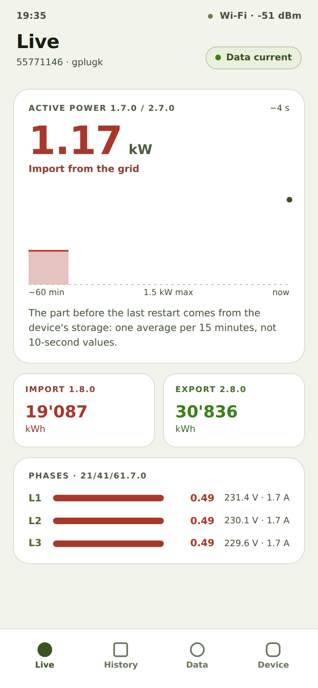

Read the current power and the meter readings
What it is about
As the owner of a gPlug I want to see at a glance how much electricity I am drawing or feeding in right now, so that I understand my consumption.
How to do it
- Open the gPlug's address. The app starts on the Live tab.
- At the top is the Active power 1.7.0 / 2.7.0 in kW with its direction: Import from the grid or Export to the grid.
- The chart below shows the last hour (−60 min to now). Tap or hover over the chart to read a point in time.
- The Import 1.8.0 and Export 2.8.0 cards show the meter readings in kWh, as the meter displays them.
- With three-phase profiles, Phases · 21/41/61.7.0 shows power, voltage and current per phase.

Live view with power, meter readings and phases
How you know it worked
- Data current is shown at the top right; the values update every few seconds.
- The meter readings match the meter's display.
Notes
- After the gPlug restarts, the part of the chart before the restart comes from the device's storage (one average per 15 minutes).
Checked with the device simulator on 30 September 2026. Checked on real hardware: gPlugK 2026-09-14.